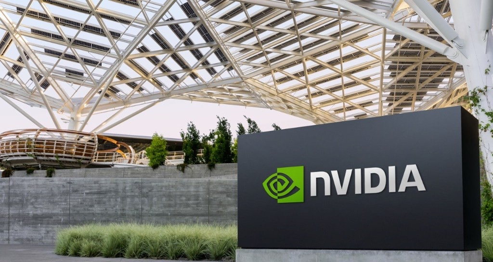
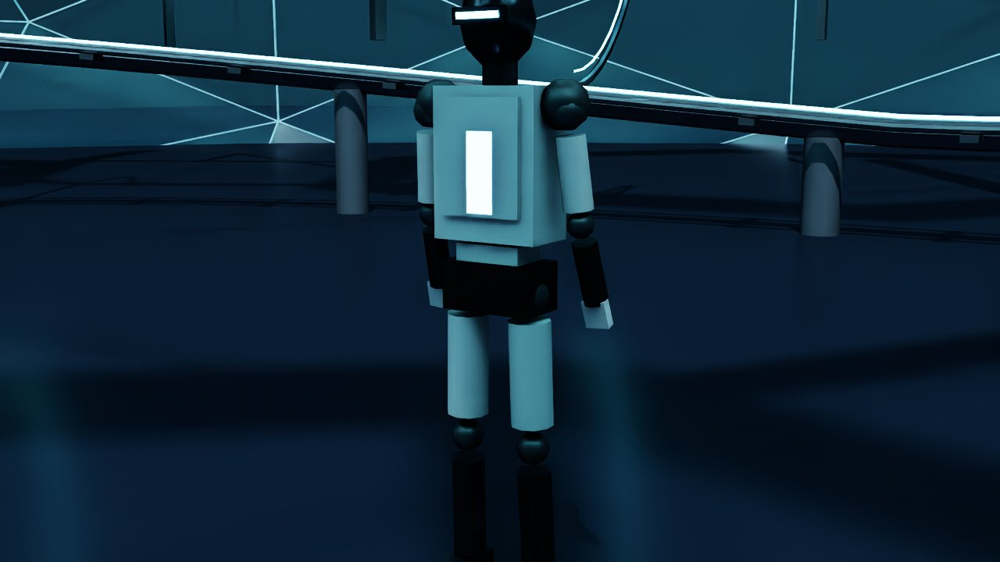
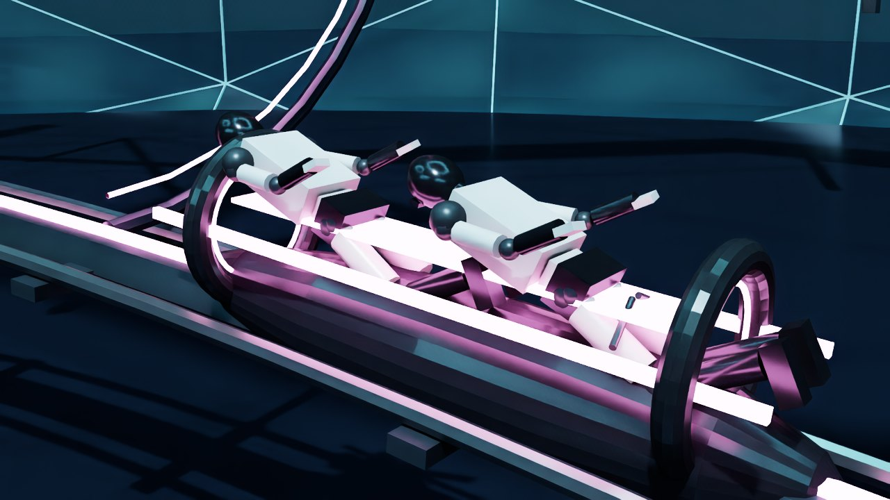
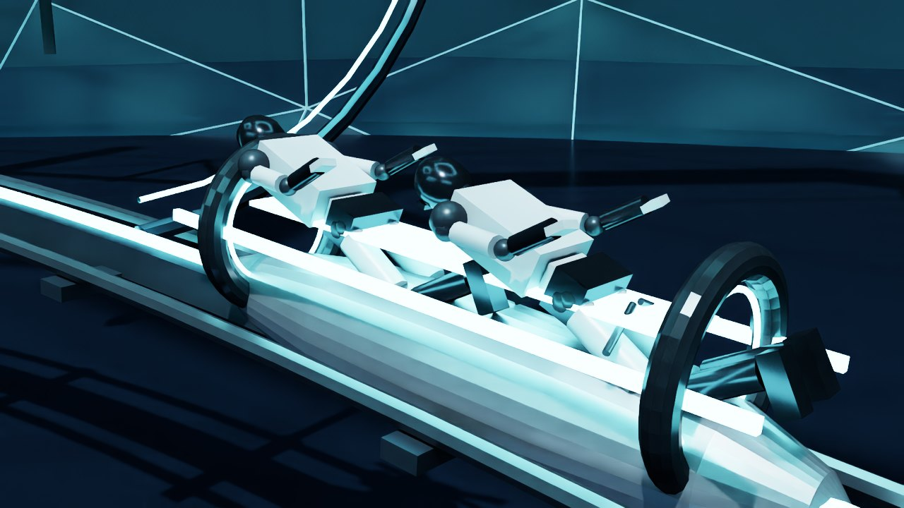
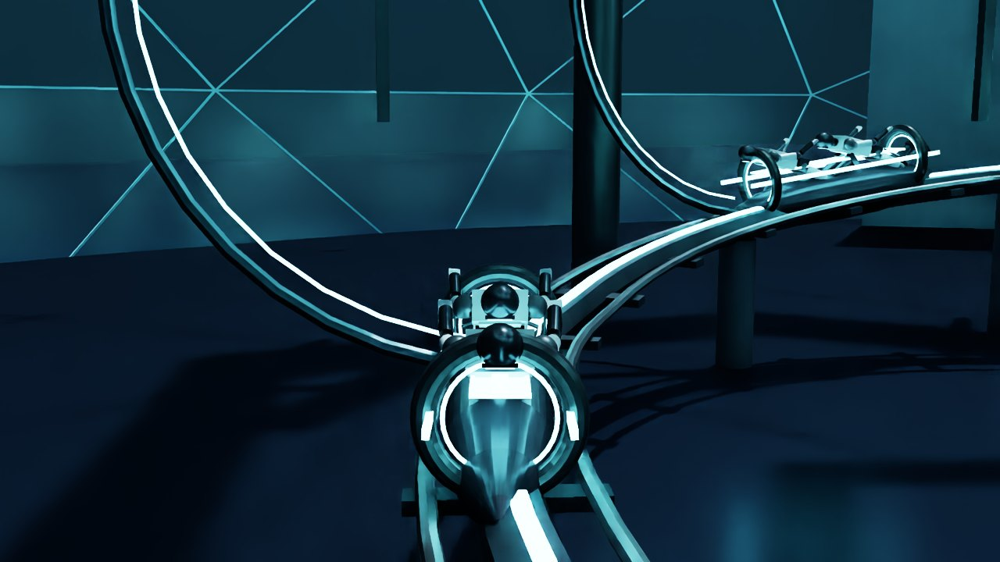
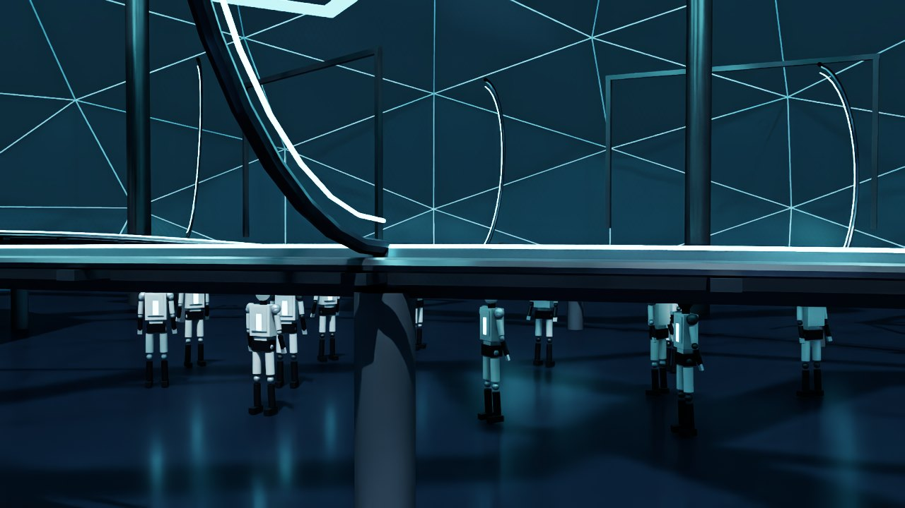
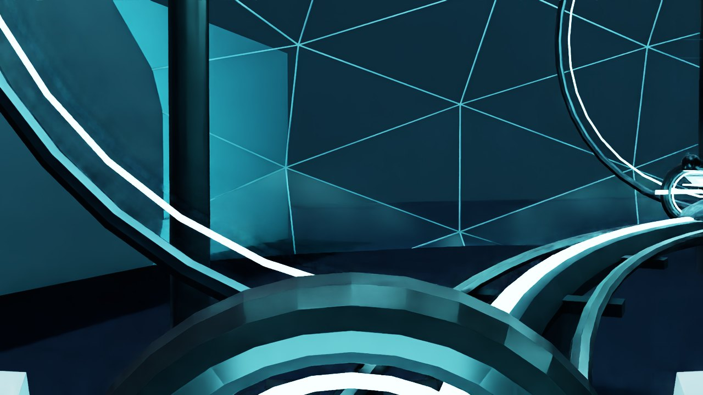

Featured project
Cudacycle
A digital twin of a campus commute: humanoid riders on a lightcycle path through a courtyard inspired by NVIDIA HQ. I started with zero experience in OpenUSD and Omniverse. Building this was how I taught myself the stack.
What inspired it
The Tron ride stuck with me. It reminded me of the NVIDIA campus, and I started wondering what happens when there are billions of humanoids in the world. If they needed to move around for service or maintenance, what would that look like? A similar kind of ride through a campus courtyard felt like a playful answer. That idea became Cudacycle.

How I used it to learn
This was a fun, self-guided way for me to explore physical AI from the ground up. I put the OpenUSD stage together, streamed a live camera with ovrtx, stepped wheel dynamics with ovphysx, and wired a React configurator to the live stage. Omniverse and Isaac Sim coursework gave me the basics. Cudacycle is where I put them together and ran the twin on NVIDIA Isaac Lab with Isaac Sim on an L40S.
- OpenUSD I composed the stage in OpenUSD: cameras, materials, track, and fleet setup. Some courtyard geometry was AI-generated to save time, and I tested importing Meshy models for look-dev. That mix taught me how a digital twin is assembled, not only rendered.
- ovrtx I learned to stream a live camera as a JPEG from the stage. The configurator viewport shows that frame, not a local mock.
- ovphysx I stepped a wheel on a rail so remaining useful life follows solved omega from PhysX, not a timer in the UI.
- Omniverse · Isaac Sim Tutorials taught me layers, materials, cameras, physics, and the robot loop. I reused those ideas inside the twin.
React configurator
The React app is the control surface: pick a rider, light, and finish, then launch the ride. Those controls write the live USDA. The viewport is the ovrtx frame from the stage.




Same twin, three seats


